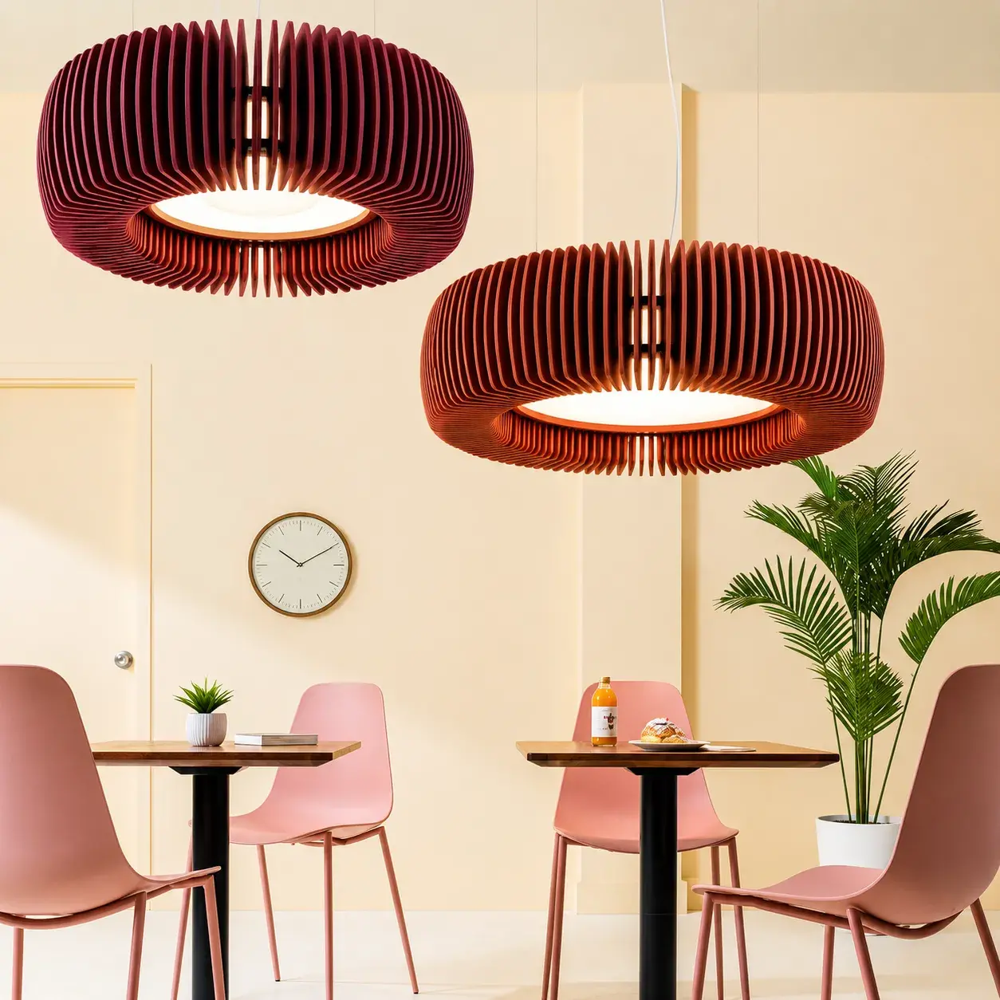
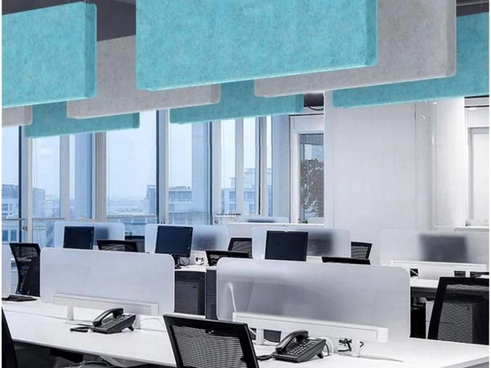
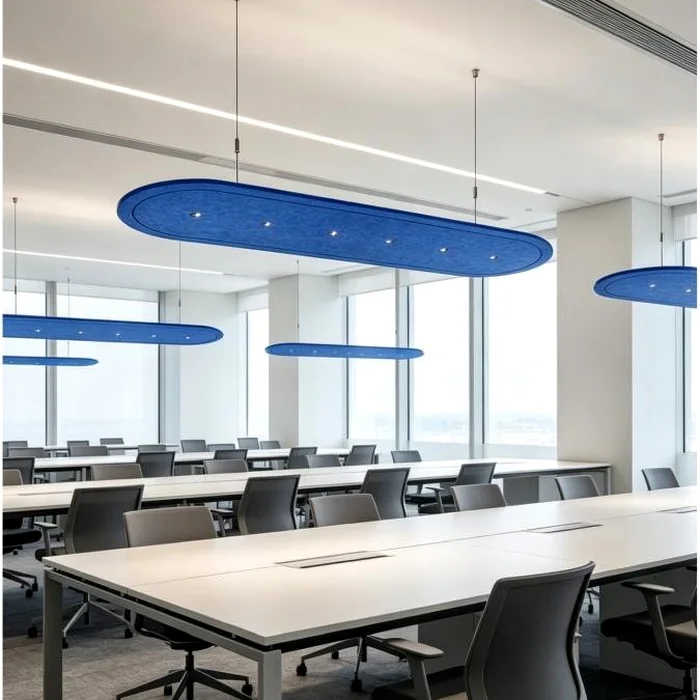
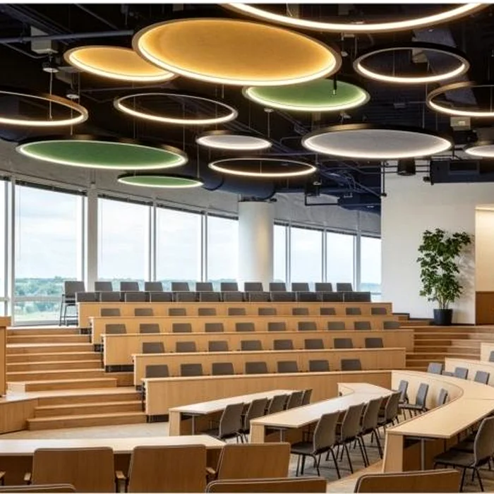
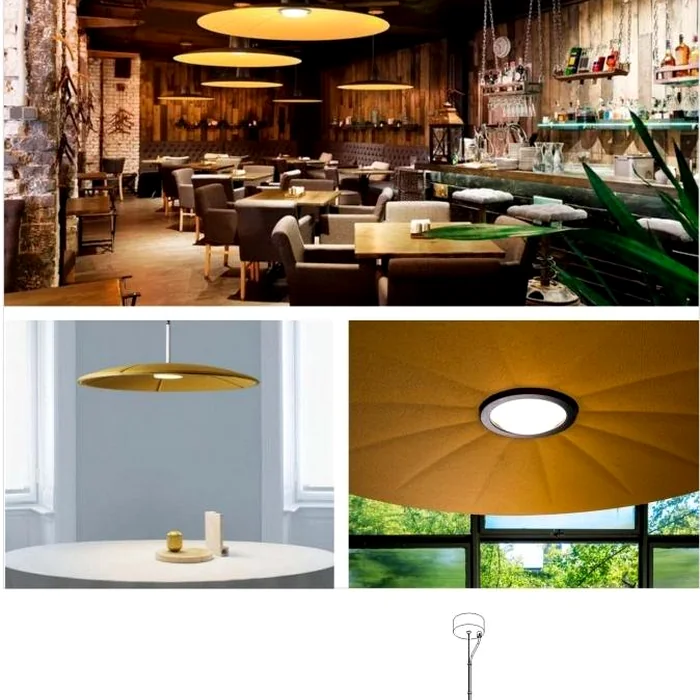
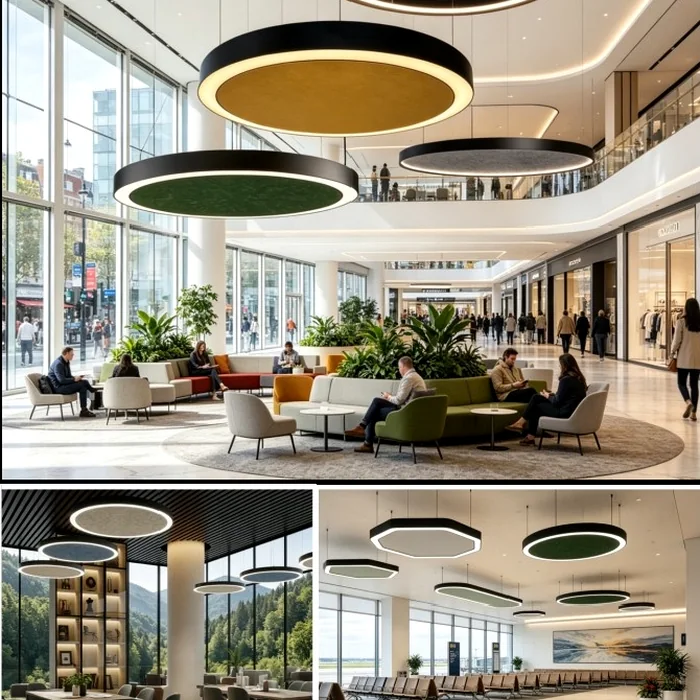
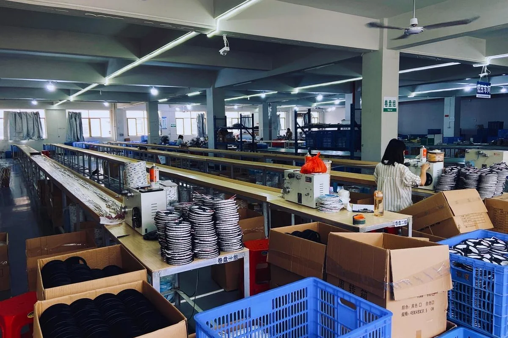
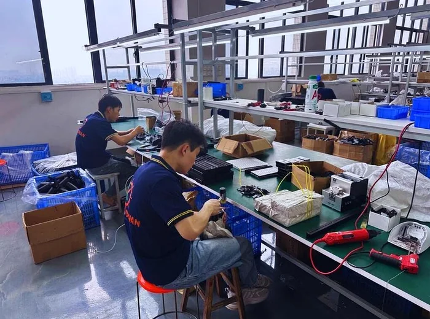
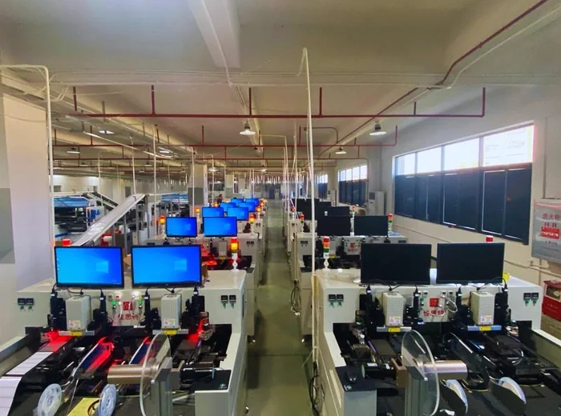

OEM / ODM Acoustic Lighting Manufacturer
Custom PET Felt Acoustic Lighting for Modern B2B Projects.
KingOrnan began acoustic lighting development in 2024. FLOSEEK was officially registered as a brand in 2025, integrating PET felt acoustic materials with architectural LED lighting for commercial projects.

Product Categories
Acoustic lighting built for project specification and scalable supply.
Start from standard acoustic pendant and linear designs, or work with our team to develop a private-label product line for your market.

01
Acoustic Pendant Lights
PET felt acoustic pendant lamps for offices, meeting rooms and hospitality spaces. Ask for pendant options
02
Acoustic Linear Lights
Linear acoustic baffle lighting for open offices, classrooms and public interiors. Discuss linear lighting
03
Ceiling & Wall Acoustic Lighting
Integrated lighting concepts for acoustic ceilings, walls and decorative interior systems. Share your project idea
04
Acoustic Floor Lamps
Freestanding PET felt acoustic lighting for lounges, reception areas and flexible workspaces. Ask for floor lamp optionsOEM
Custom Acoustic Lamp Design
Develop your own sizes, colors, shapes, wattage, CCT, dimming, logo and packaging. See OEM/ODM processWhy Acoustic Lighting
One product solves two project needs: light quality and acoustic comfort.
In commercial interiors, lighting cannot only look good. It must support concentration, communication and brand atmosphere. PET felt acoustic lighting combines sound-absorbing surfaces with comfortable illumination.

Applications
Designed for spaces where people need to hear better and feel better.

Office & Meeting Rooms
Education Spaces
Restaurant & Hospitality
Commercial InteriorsOEM/ODM Capability
From concept to sample, from sample to stable bulk production.
FLOSEEK supports acoustic lighting brands, distributors and project buyers who need differentiated products instead of standard catalog items only.
Requirement
Share target product, space, size, quantity, certification market and budget range.
Design Proposal
We confirm structure, PET felt color, LED specification, dimming and installation method.
Sample & Testing
Prototype for appearance, light effect, installation and electrical performance confirmation.
Production & Delivery
Quality control, packaging, labeling, bulk order management and global logistics support.
Material
PET felt material, soft texture, architectural appearance.
The acoustic surface creates a warm visual language for premium interiors while supporting sound absorption requirements in open and shared spaces.



Manufacturing & Supply
Experienced LED manufacturing with acoustic product development support.
We combine LED lighting manufacturing experience with custom acoustic material development, helping B2B customers move from idea to stable supply faster.
- Sales office in Ningbo, Zhejiang, China
- Manufacturing base in Zhongshan, Guangdong, China
- Quality control for sampling, production and packaging
- Support for private label and project-based requirements
FAQ
Common questions from importers, distributors and project buyers.
Use this section to reduce repeated communication and guide visitors toward a qualified inquiry.
Can you make custom PET felt acoustic lights?
Yes. We support OEM/ODM customization for size, shape, PET felt color, wattage, CCT, dimming, mounting accessories, logo and packaging.
What buyer types do you mainly serve?
Lighting importers, distributors, acoustic panel brands, office furniture brands, building material wholesalers, contractors, designers, architects and acoustic consultants.
Can you provide samples before bulk orders?
Yes. For custom projects, we recommend sample confirmation before mass production so the appearance, light effect, mounting method and packaging can be checked.
Can you support certificates for different markets?
CE is available, and certificate requirements for specific target markets can be discussed according to product specification and order plan. Do not list certificates before confirmation.
Start Your Project
Tell us your acoustic lighting requirement.
Send your target product, project type, size, quantity, country and certification requirements. Our sales team will help confirm a suitable solution.